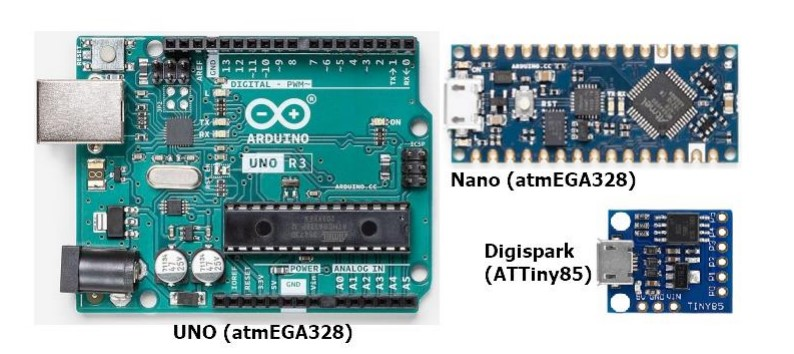
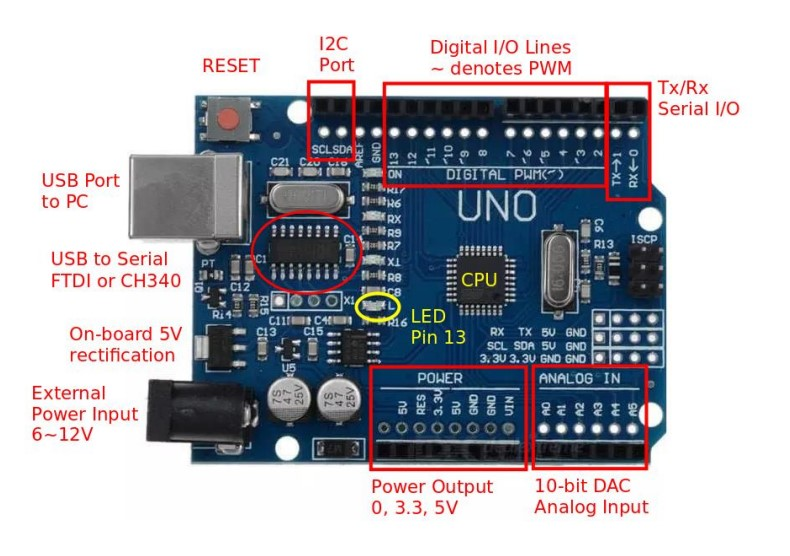
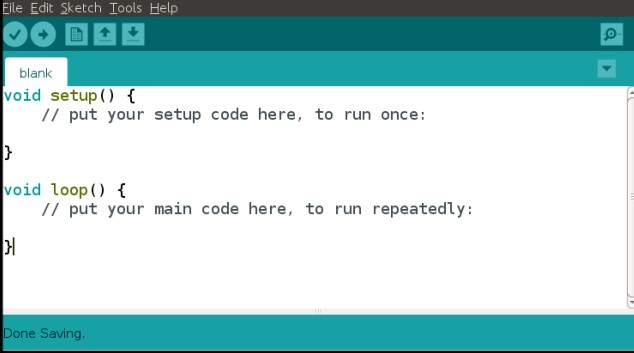

The process of programming small computers or microcontrollers that are embedded in electronic devices or systems.
These microcontrollers are responsible for controlling the functions of the device, such as its display, sensors, motors, and other hardware components.
It is used in a wide range of industries, including automotive, aerospace, medical devices, and consumer electronics.
Examples of products that rely on embedded programming includes:
Smartphones
Smart home devices
Cars
Drones
Robots.
Microcontroller Systems Introduction
It refer to electronic systems that use microcontrollers, which are small computer chips that contain a CPU, memory, and input/output peripherals on a single integrated circuit.
These systems are used in a variety of applications, from simple consumer electronics devices to complex industrial control systems.
A microcontroller system typically consists of:
Microcontroller chip
External memory
Power supply
Input/output peripherals
Sensors.
Actuators.
Communication interface such as Ethernet or USB.
Arduino Systems Introduction

Open source libraries & support
Inexpensive, lots of clones, 3rd party manufacturers
Simple, clear programming environment using GUI
Cross-platform (Windows, MacOSx, Linux)
Arduino Uno
Most common microcontroller board to begin Arduino projects.
Uses a ATmel Atmega328P processor with a separate programmable interface using another Atmel processor and USB.
Has sockets for interfacing and power
Uno Board Features

Power
Can be powered from USB port (<0.5A)
External power from DC jack 6V ~ 12V
Power outputs: 0 (GND), 3.3V, 5.0V (up to 0.3A), Vref (5V)
Digital Input/Output pins
Can be configured as Input, Output or Pull-Up Inputs
Has Pulse-Width-Modulation on ~ indicated Pins
Built-in LED on Pin13
Analog Inputs
10-bit Analog inputs
Others
Serial I/O interface
I2C interface
SPI interface
Programming the Arduino Uno

Saved as sketches (extension .ino)
Follows most characteristics of a C++ syntax/structure
Always has 2 functions:
setup() – code is only executed once
Contains initialization code
Contains initialization of variables
Contains setup and configuration of I/O ports
Contains setup of other interfaces
loop() – code is continuously looped
The loop() function is executed after the setup() code completes.
Loops infinitely executing code within the loop() function
Place your code/program within this function, there is NO stopping this code
Digital Input/Output(simplified operations)
pinMode() - initialises the pin
digitalRead() - reads/inputs a digital value
digitalWrite() - outputs a digital value
analogWrite() - outputs a PWM
Example: Using an External LED
I wired up all the circuits
I used 220ohm resistor and connect to pin 8
I used 1000 delay
Compile, Upload, Execute
Exercise 7 Segment LED Timer
Made up of 7 separate LEDs
Combined in segments,forms digits
Change the switches to see the effect
Assignment: A countdown timer
Using 7-segment circuit
Convert the circuit which uses an Uno to control the 7-segment CC display
Write a program that counts from 0 to 9 continuously